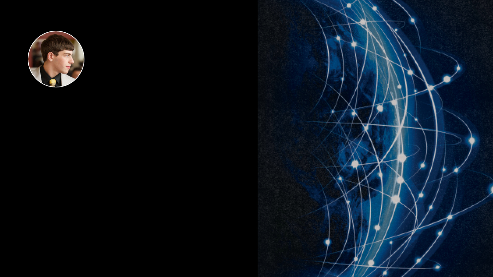
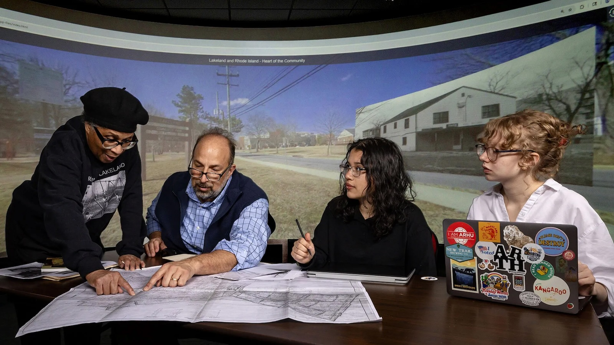
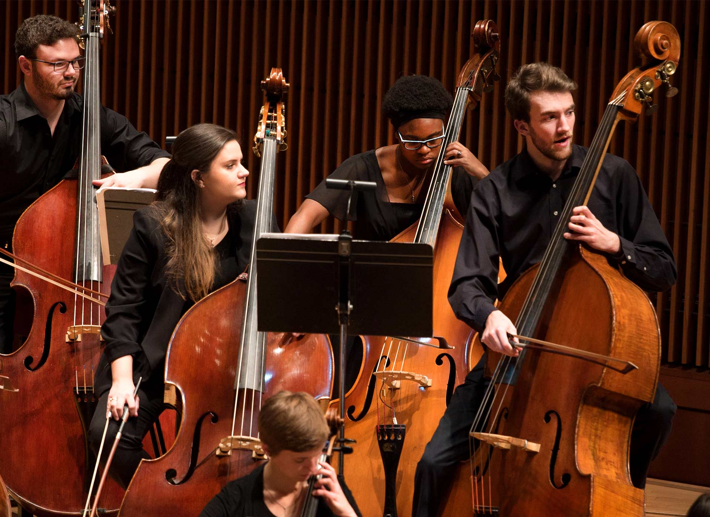

American Studies
The graduating senior focused his honors thesis on disability access and is planning for a future in advocacy law.
American Studies
The graduating senior focused his honors thesis on disability access and is planning for a future in advocacy law.
College of Arts and Humanities, English
From reading poetry on stage to researching the region’s jazz scene, the English major explored storytelling through writing, music and research.
The Harriet Tubman Department of Women, Gender, and Sexuality Studies
Alexis Lothian developed the 300-level course “Artificial Intelligence Otherwise” with support from a seed grant from the Artificial Intelligence Interdisciplinary Institute at Maryland.
With a combined total of more than 70 majors, minors and certificates, we encourage you to explore and discover your passion!
The college provides boundless opportunities for scholarly exploration and practical experience across nearly 40 graduate programs.
The college offers several certificate programs so students can pursue a specialization while obtaining their degree.

DEMAND FEARLESS IDEAS
The research and creative works of our faculty, students and alumni are setting the agenda for transformative dialogue about the value of the arts and the humanities in the world today.
School of Languages, Literatures, and Cultures
In her award-winning book “Nile Nightshade,” Assistant Professor of Arabic Anny Gaul traces the tomato’s path to Egypt and explores how it became central to home kitchens across the country.
Arts for All, David C. Driskell Center for the Visual Arts and Culture of African Americans and the African Diaspora
The grant will support digitization, archival processing and expanded public access across The Driskell Center Archives.

American Studies, Arts for All, Michelle Smith Collaboratory for Visual Culture
New exhibit tells story of nearby Lakeland with help from UMD students and faculty.

Experience the tight-knit feel of a small liberal arts college with all the perks of a national research university.
14 Departments
30 Academic Majors
8:1 Student/Faculty Ratio
History
In new book, historian depicts American Revolution as global war.
American Studies, College of Arts and Humanities
Darryll J. Pines, Janelle Wong to be inducted for educational leadership, study of Asian American experience.
Philosophy
In the College of Arts and Humanities, students are exploring artificial intelligence not just as a technology, but as a force shaping human life.
In the News
Feature, Student Experience and Success
Follow us on social media and share your stories and news with us!